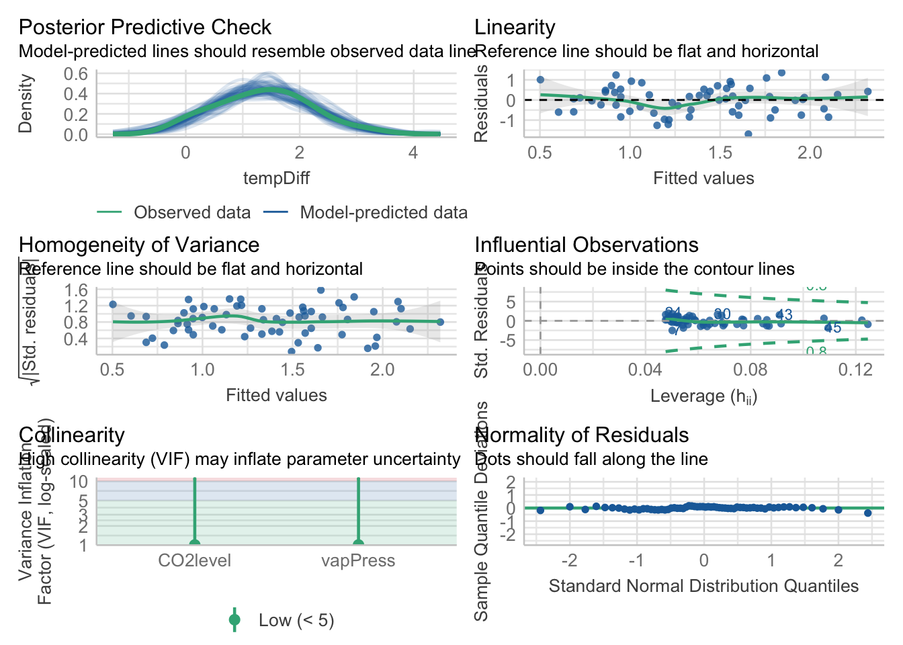

library(dplyr)
library(palmerpenguins)
data(penguins)
penguins <- penguins |> filter(!is.na(sex))HW6 Complex Linear Models
BIOL 607
1) Complex Linear Models and their Design Matrices
1A.
penguins_lm <- lm(body_mass_g ~ flipper_length_mm + sex,
data = penguins)1B.
| Intercept | flipper_length_mm | sexmale |
|---|---|---|
| 1 | 181 | 1 |
| 1 | 186 | 1 |
| 1 | 195 | 1 |
1C.
penguins_lm2 <- lm(body_mass_g ~ flipper_length_mm + sex + species,
data = penguins)
model.matrix(penguins_lm2)[c(1, 2, 200, 201, 300, 301),] (Intercept) flipper_length_mm sexmale speciesChinstrap speciesGentoo
1 1 181 1 0 0
2 1 186 0 0 0
200 1 217 0 0 1
201 1 220 1 0 1
300 1 195 1 1 0
301 1 199 0 1 01D.
penguins_lm3 <- lm(body_mass_g ~ flipper_length_mm * sex + species,
data = penguins)
model.matrix(penguins_lm3)[c(1, 2, 200, 201, 300, 301),] (Intercept) flipper_length_mm sexmale speciesChinstrap speciesGentoo
1 1 181 1 0 0
2 1 186 0 0 0
200 1 217 0 0 1
201 1 220 1 0 1
300 1 195 1 1 0
301 1 199 0 1 0
flipper_length_mm:sexmale
1 181
2 0
200 0
201 220
300 195
301 02) Three Variations on a theme
pacman::p_load(DAAG)
data(leaftemp)2A.
lm1 <- lm(tempDiff ~ vapPress, data = leaftemp)
lm2 <- lm(tempDiff ~ vapPress + CO2level, data= leaftemp)
lm3 <- lm(tempDiff ~ vapPress*CO2level, data= leaftemp)2B.
library(performance)
check_model(lm1)check_model(lm2)
check_model(lm3)Yes all of the models pass checks of assumptions!
2C.
\[ tempDiff = \beta_{0} + \beta_{1}*vapPress + \beta_{2}*CO2level_{medium}+\beta_{3}CO2level_{high} +\beta_{4}CO2level_{low}+ \epsilon \]
2D.
lm1 - simple linear regression
library(tidyverse)
library(visreg)
library(ggthemes)
#lm1
visreg(lm1, "vapPress", gg = TRUE) +
theme_clean() +
labs(title = "Simple Linear Regression")#lm2
visreg(lm2, "vapPress", by = "CO2level", gg = TRUE) +
theme_clean() +
labs(title = "Analysis of Covariance")#lm3
visreg(lm3, "vapPress", by = "CO2level", gg = TRUE) +
theme_clean() +
labs(title = "Interaction Model")3) Interactions with Continuous Variables
3A.
library(readr)
data_ocean <- read_csv("data/c_burial_sims.csv")
data_3WI <- lm(net_carbon_sequestration ~ sink_rate * microbial_abundance * detritivore_biomass,
data = data_ocean)
check_model(data_3WI)Yes the 3 Way Interaction model meets assumptions
3B.
library(broom)
tidy(data_3WI)# A tibble: 8 × 5
term estimate std.error statistic p.value
<chr> <dbl> <dbl> <dbl> <dbl>
1 (Intercept) -5.98 0.594 -10.1 1.69e-16
2 sink_rate 0.897 0.262 3.43 9.07e- 4
3 microbial_abundance -1.79 0.290 -6.18 1.76e- 8
4 detritivore_biomass -0.724 0.240 -3.02 3.26e- 3
5 sink_rate:microbial_abundance 1.73 0.130 13.3 3.82e-23
6 sink_rate:detritivore_biomass 0.818 0.103 7.98 4.04e-12
7 microbial_abundance:detritivore_biomass 1.97 0.113 17.5 6.09e-31
8 sink_rate:microbial_abundance:detritivo… -1.20 0.0504 -23.9 3.14e-41If you look at the coefficents we can see sink rate increases carbon sequestration even within 2-way interactions. One major thing that I noticed is the coefficent of the 3-way interaction and it’s standard deviation. The negative coefficient means that the effect of any 2 variables on carbon sequestration depends on the third variable. Thus meaning even if sink rate is high, detritivore biomass and microbial abundance together will lower carbon sequestration.
3C.
visreg2d(data_3WI, "sink_rate", "microbial_abundance")visreg2d(data_3WI, "sink_rate", "detritivore_biomass")visreg2d(data_3WI, "microbial_abundance", "detritivore_biomass")These visualizations show that when sink rate is high it leads to the highest levels of net carbon seq uestration, showing the influence of sink rate in carbon burial.
Meta Questions
1.
I think in the future with models we are going to apply the biological world where there are a lot more influences as well as data collection errors.
2.
Something I find interesting is the visualization opportunities that arise with these interaction effects. I find most intimidating is analyzing them into the real world problem, but I think this is something I will improve on in the future.
3.
I think I will use complex models like this in the future regularly due to me being interested in computational biology more specifically Biomedical Informatics where there will be tons of genomes to compare.
4.
My concern in the future is how to decipher if I should use a linear model or a new one and making sure my assumptions pass.
5.
This assignment took me less time then previous assignments only taking me 2 hours to complete.
6.
I would give myself a sufficient grade for this assignment as I completed everything required but did not to challenge myself completely when it comes to visualization as I have done in the past.